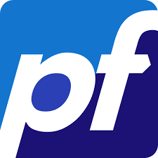

Projet tamaran
Contexte
Premier projet scolaire, en collaboration avec un camarade
L'objectif est d'analyser une demande, et configurer les services nécéssaires.
Installations et configurations
- Installation de différents services nécéssaires au bon fonctionnement d'un SI
- Installation de serveurs windows / linux
- Attribution de droits
- Gestion d'utilisateurs
- Cybersécurité
- Analyse de besoins
- Gestion de projet
Compétences travaillées
- Administration de systèmes
- Supervision
- Gestion de bases de données
- Administration réseau
- Sécurité
- Organisation, documentation et communication
- Gestion de projet
Services utilisés


